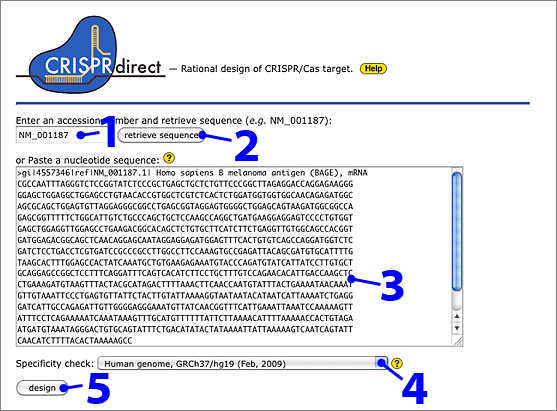
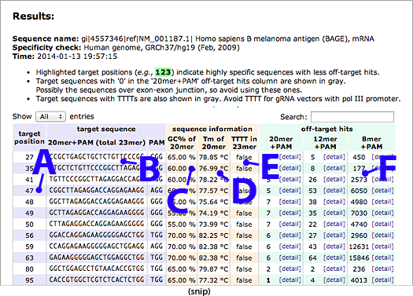
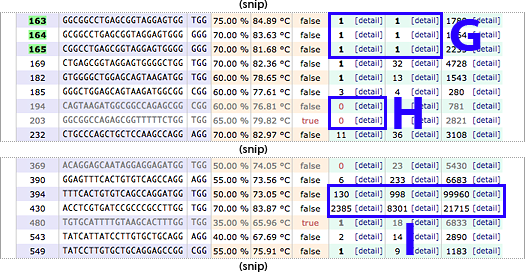
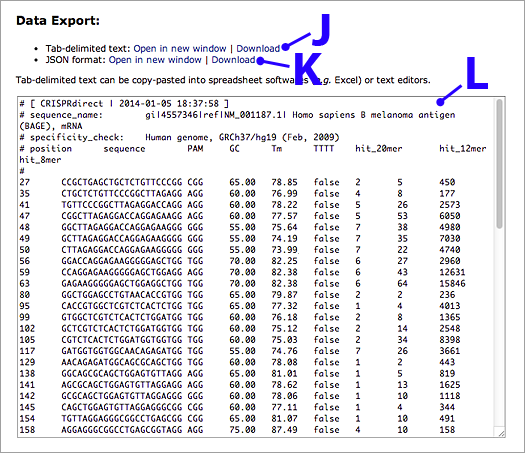
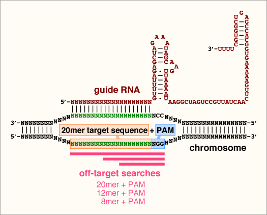

— Rational design of CRISPR/Cas target.
— Rational design of CRISPR/Cas target.
About CRISPRdirect
CRISPRdirect is a web server for selecting rational CRISPR/Cas targets from an input sequence.
All services of the CRISPRdirect web server are provided free of charge to all users.
Example
Selecting target sites for human B melanoma antigen (BAGE) gene
- Enter the accession number for human BAGE gene (NM_001187).
- Click 'retrieve sequence' to get nucleotide sequence from GenBank.
- Or you can directly paste a nucleotide sequence.
FASTA format or a plain nucleotide sequence up to 10 kbp are accepted.
- Select 'Human genome, GRCh37/hg19 (Feb, 2009)' to check for off-targets.
- Click 'design'.

Results
- Target positions.
- Target sequences, 20mer + 3mer PAM (total 23mer).
- GC content of the target 20mer.
- Calculated Tm of the target 20mer.
- Presence or absence of TTTT (four contiguous T’s that cause pol III termination)
in the target 20mer. Avoid TTTT in gRNA vectors with pol III promoter.
- Off-target search results against human genome. The number of target sites with perfect match
is shown. Note that the number displayed here includes both on-target and off-target sites.
Smaller number (but not zero) is better for these columns to avoid off-target editing.
- 20mer+PAM: The target sequence (20mer) adjacent to the PAM is searched against the genome.
One ('1') in this column usually indicates that the sequence has only one perfect match
with the intended target (e.g., BAGE locus in the genome).
Zero ('0') in this column means that the sequence has no match in the genomic sequence;
such sequences may possibly span over exon-exon junctions, so their use should be avoided.
- 12mer+PAM: The 12mer of 3′ region of the target sequence adjacent to the PAM is searched
against the genome. The region contains critical residues determining target specificity.
- 8mer+PAM: The 8mer of 3′ region of the target sequence adjacent to the PAM is searched
against the genome. The region contains the most critical residues determining target specificity.

- Only one match in 20mer+PAM and 12mer+PAM search. These targets are highly specific.
→ Recommended for CRISPR/Cas target.
Target positions are highlighted with green (e.g., 45 - 67).
- No match in 20mer+PAM search. Possibly the sequence spans over exon-exon junction,
so avoid using these.
→ Not recommended for CRISPR/Cas target.
- Very high number of off-target hits. Avoid using these sequences.
→ Not recommended for CRISPR/Cas target.

Saving and exporting the results
- Tab-delimited text can be displayed or downloaded as a file.
- JSON format output is also available.
- Tab-delimited text, ready-to-use for copy-pasting into Excel or text editors, etc.

The result page can also be saved as HTML file and opened by a web browser again.
Methods
Specificity check
The number of target sites in the genome (including both on-target and off-target sites)
is displayed using
Jellyfish k-mer counting software. A detailed list of off-target candidates are
displayed using GGGenome
REST API. GGGenome quickly searches short nucleotide sequences allowing mismatches and
gaps utilizing suffix arrays and inverse suffix links indexed on solid state drive (SSD).
Specificity check can be performed for following species:
- Human genome, GRCh37/hg19 (Feb, 2009)
ftp://hgdownload.soe.ucsc.edu/goldenPath/hg19/bigZips/chromFa.tar.gz
- Mouse genome, GRCm38/mm10 (Dec, 2011)
ftp://hgdownload.soe.ucsc.edu/goldenPath/mm10/bigZips/chromFa.tar.gz
- Rat genome, RGSC 5.0/rn5 (Mar, 2012)
ftp://hgdownload.soe.ucsc.edu/goldenPath/rn5/bigZips/chromFa.tar.gz
- Chicken genome, ICGSC Gallus_gallus-4.0/galGal4 (Nov, 2011)
ftp://hgdownload.soe.ucsc.edu/goldenPath/galGal4/bigZips/galGal4.fa.gz
- Xenopus tropicalis genome, JGI 4.2/xenTro3 (Nov, 2009)
ftp://hgdownload.soe.ucsc.edu/goldenPath/xenTro3/bigZips/xenTro3.fa.gz
- Zebrafish genome, Zv9/danRer7 (Jul, 2010)
ftp://hgdownload.soe.ucsc.edu/goldenPath/danRer7/bigZips/danRer7.fa.gz
- Ciona intestinalis genome, JGI 2.1/ci2 (Mar, 2005)
ftp://hgdownload.soe.ucsc.edu/goldenPath/ci2/bigZips/ScaffoldFa.zip
- Drosophila genome, BDGP R5/dm3 (Apr, 2006)
ftp://hgdownload.soe.ucsc.edu/goldenPath/dm3/bigZips/chromFa.tar.gz
- C. elegans genome, WS220/ce10 (Oct, 2010)
ftp://hgdownload.soe.ucsc.edu/goldenPath/ce10/bigZips/chromFa.tar.gz
- Arabidopsis thaliana genome, TAIR10 (Nov, 2010)
ftp://ftp.arabidopsis.org/home/tair/Sequences/whole_chromosomes/*.fas
- Rice genome, Os-Nipponbare-Reference-IRGSP-1.0 (Oct, 2011)
Genome assemblies (12 chromosomes) + Unanchored sequences from
http://rapdb.dna.affrc.go.jp/download/irgsp1.html
- Silkworm genome, Bmor1 (Apr, 2008)
Bombyx_mori.Bmor1.17.dna.toplevel.fa.gz from
ftp://ftp.ensemblgenomes.org/pub/metazoa/release-17/fasta/bombyx_mori/dna/
- S. cerevisiae (S288C) genome, sacCer3 (Apr, 2011)
ftp://hgdownload.soe.ucsc.edu/goldenPath/sacCer3/bigZips/chromFa.tar.gz
Illustrated overview of specificity check

Useful tools
CRISPRdirect team
Yuki Naito1,
Kimihiro Hino2,
Hidemasa Bono1,
Kumiko Ui-Tei2
1Database Center for Life Science
(DBCLS) and
2University of Tokyo
CRISPRdirect |
DBCLS